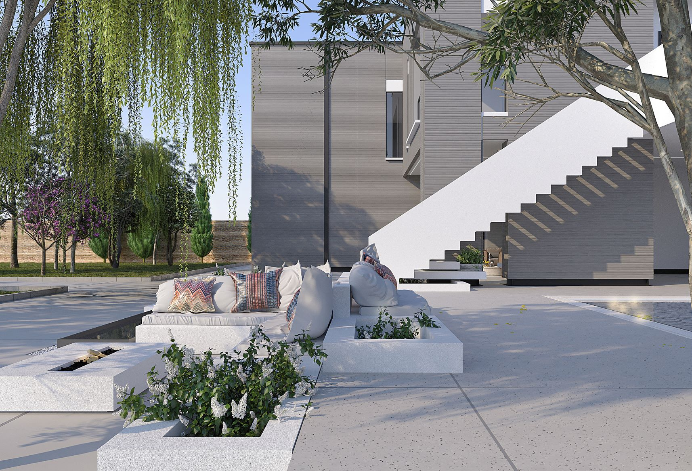
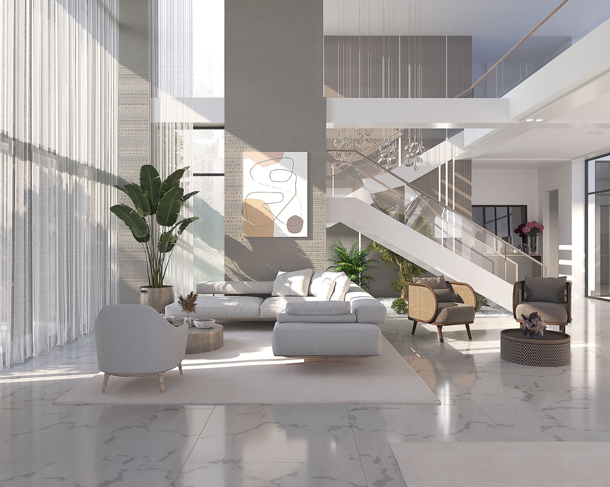
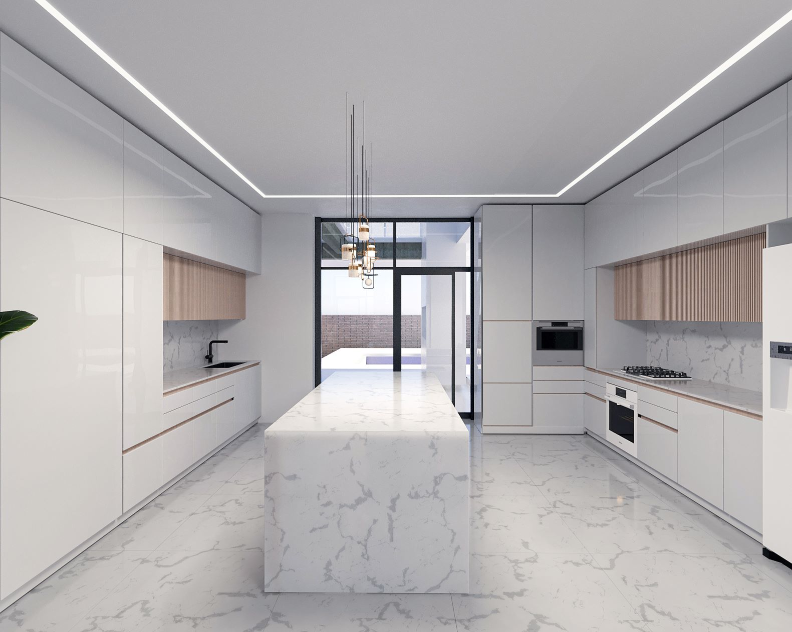

Architecture, Structure
MEP, Project Management
Villa
720m2
Under Construction
The design concept of Safadasht Koushk focuses on strengthening the relationship between the villa and its surrounding gardens, creating a continuous visual and spatial dialogue with nature. Rather than imposing on the site, the project embraces its context: existing 150-year-old trees were carefully preserved and integrated into the architectural layout, allowing greenery to penetrate the building from both the north and south. This strategy generates a rich variety of spatial experiences while naturally organizing the villa into private and more public zones. The 340 square meter residence is positioned along the northern edge of a 2,000 square meter garden, and is constructed using a restrained palette of brick, wood, concrete and faience tiles, reinforcing a sense of material authenticity and permanence.

